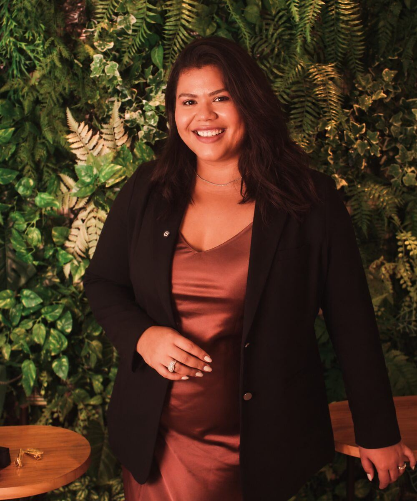

Lentes em resina
Forma, proporção e pequenos detalhes trabalhados com cuidado para um sorriso mais harmônico e natural.
Referência em lentes em resina em Maceió — AL
Cada detalhe é planejado para criar um resultado natural, harmônico e feito especialmente para você — em muitos casos, em uma única sessão.*

O que torna cada sorriso único
Cada detalhe é planejado para valorizar seus traços, preservar a naturalidade e criar harmonia sem perder a sua essência.
Forma, proporção e pequenos detalhes trabalhados com cuidado para um sorriso mais harmônico e natural.
Nada de sorriso padronizado. Cada lente é esculpida individualmente, respeitando seu rosto e sua personalidade.
Uma abordagem conservadora, planejada para preservar ao máximo a estrutura natural dos dentes.
Textura, brilho, transparência e proporções trabalhados para um resultado com aparência natural.
O que são as lentes em resina
As lentes em resina são feitas diretamente sobre os dentes, com aplicação e escultura cuidadosa da resina composta para transformar forma, proporção, textura e harmonia do sorriso.
Cor, formato e pequenos detalhes são definidos de acordo com os seus traços e com o resultado desejado — sempre buscando naturalidade e preservação da estrutura dental.
Resultados reais
Planejados de forma única para valorizar a beleza, a personalidade e a naturalidade de cada pessoa. Toque para ampliar.
* Os tratamentos são individualizados e os resultados podem variar conforme as características clínicas de cada paciente. Casos apresentados não constituem promessa ou garantia de resultado.
Como funciona
Primeiro, quero ouvir você: o que incomoda, o que gostaria de mudar e qual resultado imagina.
Avalio seu sorriso e defino cor, formato e proporção a partir dos seus traços. Se a resina não for a melhor escolha, eu falo.
A resina é esculpida diretamente sobre os dentes — em muitos casos, tudo acontece em uma única sessão.*
Revisões periódicas para cuidar do brilho, do acabamento e, principalmente, da saúde dos dentes e da gengiva.
Quem cuida do seu sorriso
Antes de pensar em formato, tamanho ou cor, eu gosto de entender você e o que deseja transformar no seu sorriso.
Meu olhar é voltado para a naturalidade e para a preservação dos seus dentes, para que o resultado combine com você e continue tendo a sua identidade.
Depoimentos
Minhas lentes ficaram exatamente como eu sonhava: naturais e muito bonitas. A Dra. dedicou todo o tempo necessário, explicou tudo com muita calma e trabalhou com um cuidado impressionante.
Fomos recebidos de forma maravilhosa. Desde o primeiro momento, nos sentimos em casa. Os tratamentos foram realizados com excelência e sem qualquer dor.
Atendimento super cuidadoso, feito com calma, técnica e muito carinho. Saí de lá já vendo diferença e com as orientações certinhas para manter o resultado.
Dúvidas frequentes
Não encontrou a sua? Pergunte direto para a Dra. Rosângela.
Tirar minha dúvidaÉ exatamente isso que descobrimos na avaliação. Primeiro eu ouço você, depois avalio seu sorriso e mostro o que é possível fazer. Se a resina não for a melhor escolha no seu caso, eu também vou te falar.
Em muitos casos, sim. Como as lentes são feitas diretamente sobre os dentes, existem casos em que a transformação acontece em uma única sessão. Mas primeiro eu avalio e planejo.
Pode ficar tranquila: nada de “dente de tubarão” por aqui. São raros os casos em que algum desgaste é necessário — e, se for indicado, eu explico tudo antes. Nada é feito sem você entender e concordar.
Naturalidade é o que eu mais valorizo. Não quero deixar todos os dentes iguais, retos e extremamente brancos: observo rosto, proporções, formato e cor para criar algo que combine com você.
Sim, na grande maioria dos casos. E não é só “fechar o espaço”: pensamos em formato, tamanho e proporção para que pareça que aquele sorriso sempre foi assim.
Sim! Com a resina ajustamos tamanho, formato e proporção, olhando lábios, gengiva, rosto e a forma como você sorri — para valorizar seus traços sem perder a naturalidade.
Sim. O acompanhamento periódico avalia acabamento, brilho, integridade da resina, mordida e, principalmente, a saúde dos dentes e da gengiva.
Varia de pessoa para pessoa: hábitos, alimentação, higiene, mordida e manutenção influenciam diretamente. Com os cuidados adequados, buscamos manter o sorriso bonito e saudável por muito tempo.
A resina pode alterar brilho ou tonalidade com o tempo, dependendo dos hábitos. Por isso acompanho meus pacientes: polimentos e manutenções ajudam a conservar a estética.
São materiais e técnicas diferentes, com indicações diferentes. Na avaliação, explico qual opção faz mais sentido para os seus dentes e para o que você deseja.
Não existe um número padrão. Observo principalmente os dentes que aparecem quando você fala e sorri, e planejamos juntos. Você não precisa colocar lente em todos os dentes.
Com indicação adequada e planejamento cuidadoso, o objetivo é trabalhar da forma mais conservadora possível. Antes de pensar na lente, pensamos na saúde do seu sorriso.
O investimento depende da quantidade de dentes, do que você deseja transformar e do planejamento necessário. Na avaliação, apresento as possibilidades que fazem sentido para você.
Agende sua avaliação
Tudo começa com uma avaliação e um planejamento pensado para você.